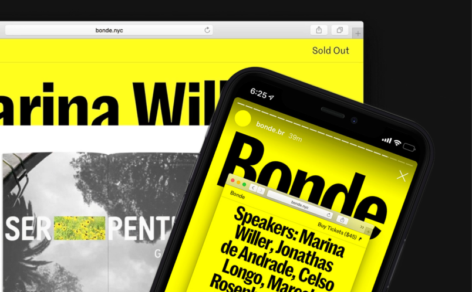
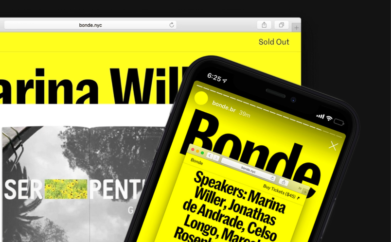

Учебник • Монетизация зинов • Как заработать на зинах
Монетизация зинов
5.1 Как заработать на зинах


2 минуты на изучение
Как получить доход от зинов благодаря прямым продажам и вспомогательной продукции

Заработок на зинах возможен через продажу тиража, привлечение спонсоров, создание платного
контента и запуск
краудфандинга.
Прямая продажа зинов — один из самых популярных и понятных способов монетизации,
который позволяет
не только окупить затраты на печать, но и оценить интерес аудитории к проекту. Размещение
зинов
в магазинах, на выставках или онлайн-платформах расширяет доступ к продукту.
 

Помимо этого, спонсорская поддержка также является важным источником дохода: с помощью спонсоров можно не только покрыть затраты на выпуск, но и предлагать бесплатные экземпляры для большей аудитории.

Краудфандинг помогает финансировать создание зинов за счёт вклада со стороны подписчиков
или других людей,
которые поддерживают ваш проект.
Платные подписки и доступ к эксклюзивному контенту дают возможность постоянной поддержки
и позволяют
создавать дополнительные выпуски или особые материалы для лояльной аудитории.
Задание
Подумайте, какой способ монетизации из вышеперечисленных подходит вам больше всего. Распишите шаги, которые нужно выполнить для внедрения такой системы монетизации в ваш личный бренд, и включите их в вашу стратегию продвижения.
Обсудить в Telegram